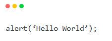

Para completar a grande tríade do desenvolvimento front-end, temos o Javascript, a única linguagem de programação das 3 tecnologias citadas.
Ele adiciona movimento às páginas web, além de permitir o processamento e transformação de dados enviados e recebidos. Ele permite criar conteúdos que se atualizam de forma dinâmica e animada, dando vida às aplicações que antes eram apenas estruturadas com HTML de forma estática.
Sempre que vir uma caixinha de alerta apitando em um site, ou um mecanismo de autocomplete em algum campo, saiba que é o Javascript agindo. Um exemplo de código utilizando a caixa de alerta:
